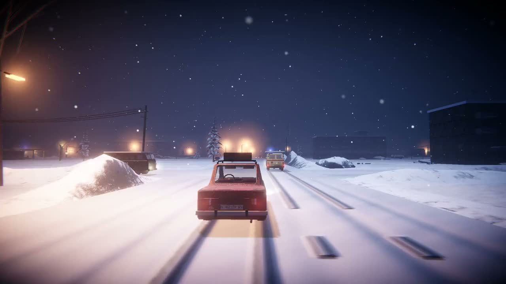
I
The chase
Sirens find you before the headlights do. Slide through the snow, slip past slow traffic, and break line of sight before the patrols close in. A helicopter will join them if you stay on the roads long enough.
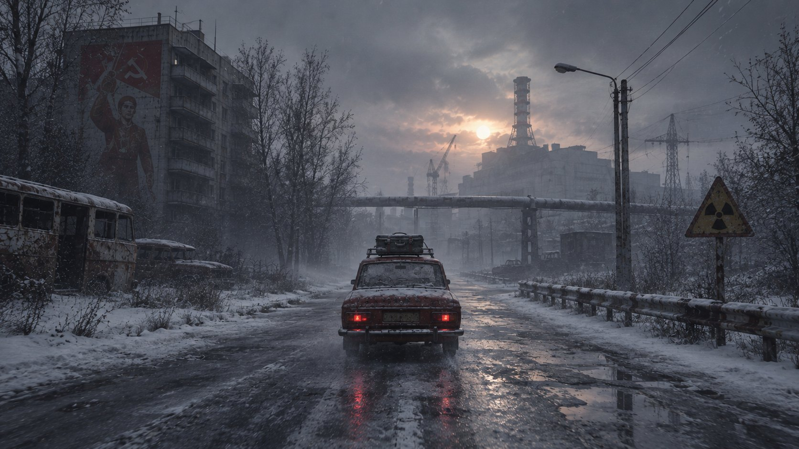
26.04.1986 · 01:23:45
One road out of Pripyat. One cold night.
A radio that will not stop talking.
Playable prototype · macOS
Windows · Coming · iOS · Coming
01 · Transmission
02 · Premise
It is the night of 26 April 1986. The town is emptying, the roads are snowed in, and the only voice you have is a dispatcher telling you where to go next. Keep driving. The police are looking for you, and so is whatever is in the sky.
Ждём на перекрёстке. Горит файер, не пропустишь.
Waiting at the crossroads. There’s a flare, you can’t miss it.
Радиационный фон растёт. Пять рентген в час.
Background is rising. Five roentgen an hour.
Дозиметристам. Уровень превышен. Не останавливаться.
Dosimetry. Level exceeded. Do not stop.
03 · The night

I
Sirens find you before the headlights do. Slide through the snow, slip past slow traffic, and break line of sight before the patrols close in. A helicopter will join them if you stay on the roads long enough.
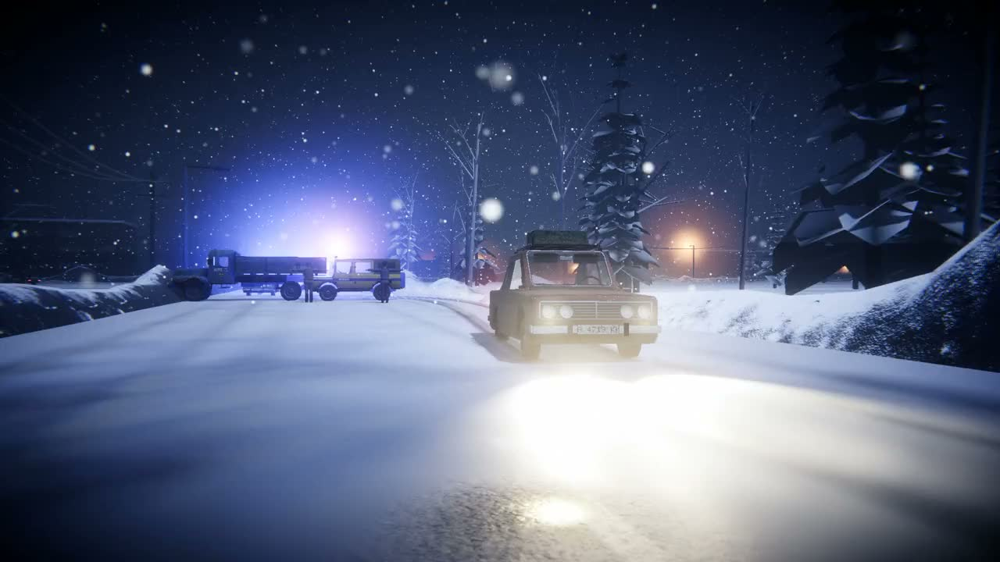
II
A voice on the radio sends you from flare to flare. Pick up what people left on the road, refuel at a forecourt, patch the car up at a roadside garage. Every task is spoken in Russian and subtitled in English.
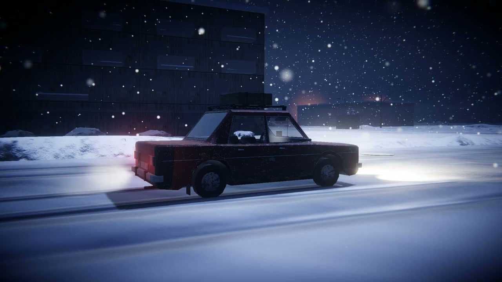
III
Fog, falling snow and half-dead sodium lamps. Your tyres leave tracks that stay. Snowbanks pile along the road in patches, and the world is dark on purpose.
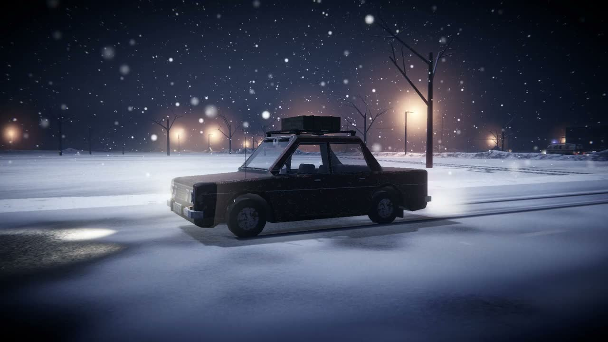
IV
Past the forest a searchlight sweeps the road. Near the reactor the Geiger climbs, the picture greys and grains, and the car slowly gives up. The police will not follow you in.
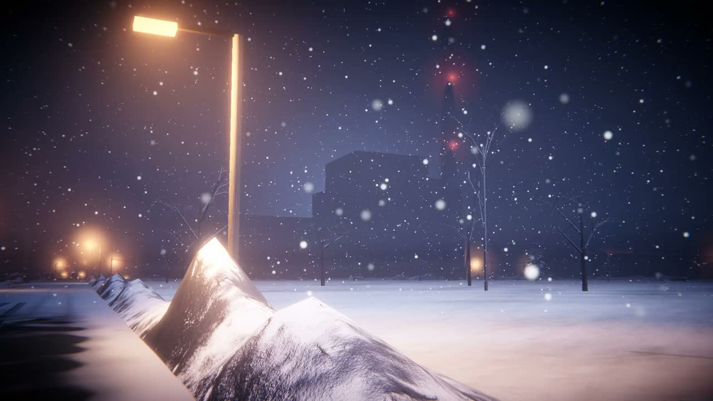
V
The clock starts a little after one. Hold on until six and the sky greys, the dark that hid you lifts, and the run ends as a win. A log keeps your furthest night, your recent runs and your rank, from Recruit up to Last Signal.
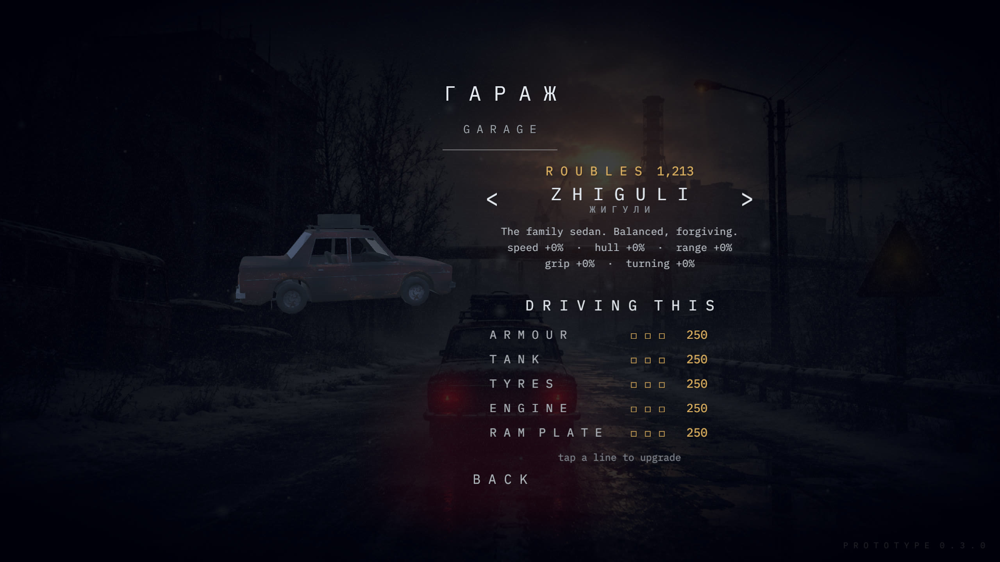
VI
Every run pays out in roubles. Spend them in the garage on another car, or on armour, a bigger tank, better tyres, a stronger engine and a ram plate. The stronger cars stay locked until you have driven far enough to deserve them.
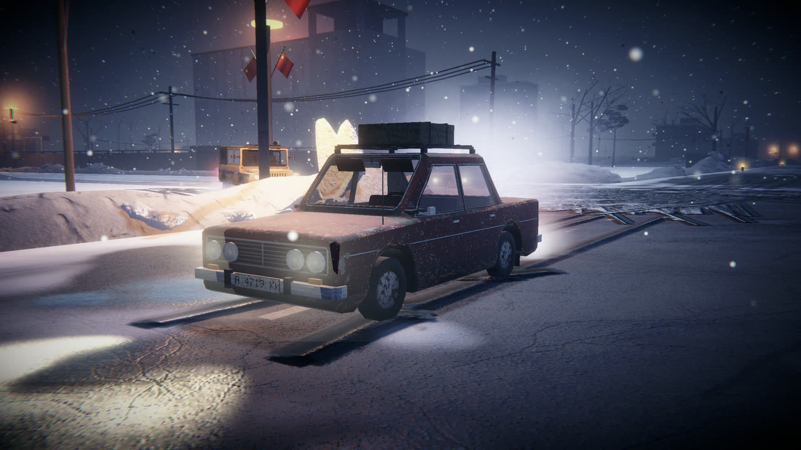
ZHIGULI ЖИГУЛИ
The family sedan. Balanced, forgiving.
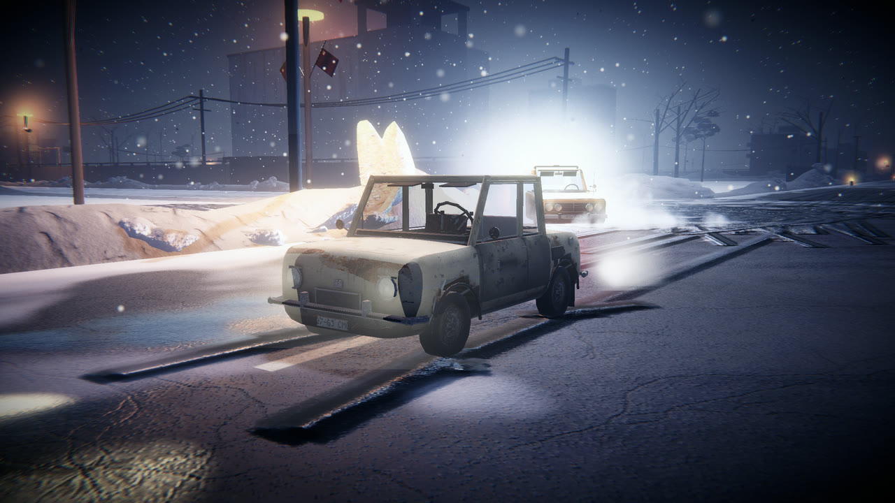
ZAPOROZHETS ЗАПОРОЖЕЦ
Tiny and nimble. Folds like paper.
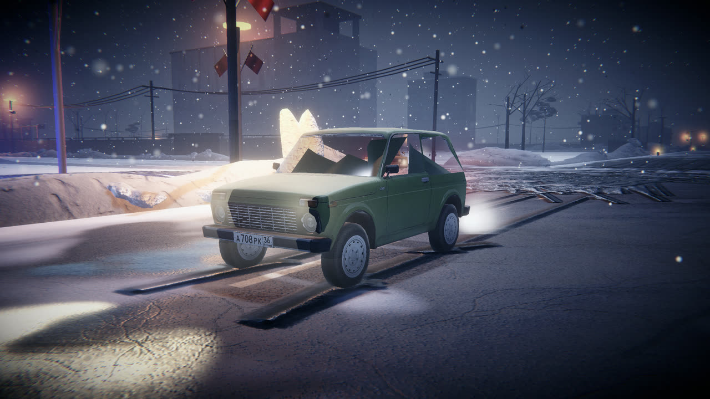
NIVA НИВА
Small 4x4. Grips, shrugs off knocks.
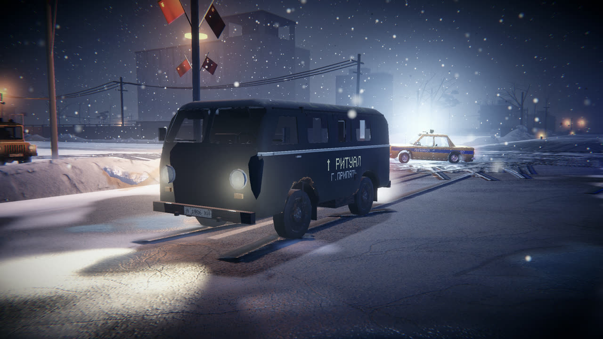
KATAFALK КАТАФАЛК
The hearse. Goes far on a tank.
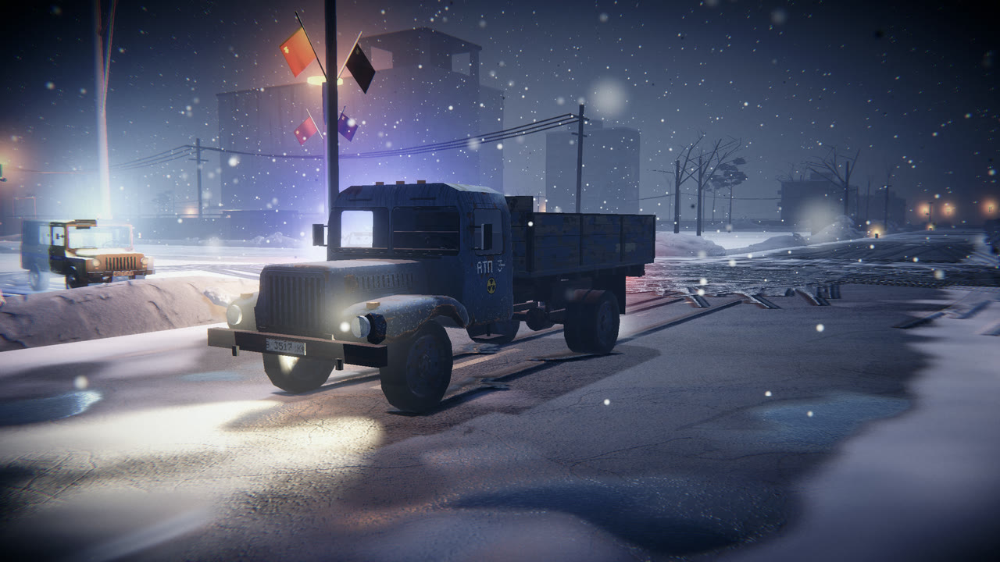
ZIL TRUCK ЗИЛ
Rams roadblocks. Turns like a barn.
04 · Gallery
05 · Play it
An early build of the whole night: the city, the plant, the militsiya, the radio. Rough edges included. Tell me what broke and how far you got.
Download for Mac · 0.3.0 Windows · Coming iOS · Coming
06 · Sound
The radio voices and the music are made by the developer. The rest is layered from recorded effects: every crash is a different crunch over a low thump, passing trucks fade into the fog, and the wind rises only when a gust does.
07 · Credits
Pripyat, 26 April 1986
Made by Glenn Svendsen.